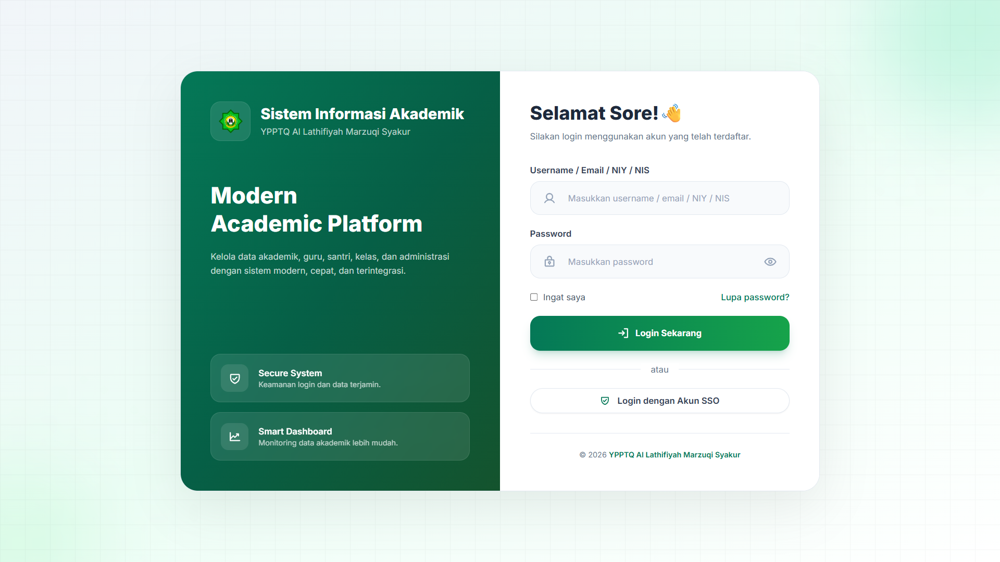
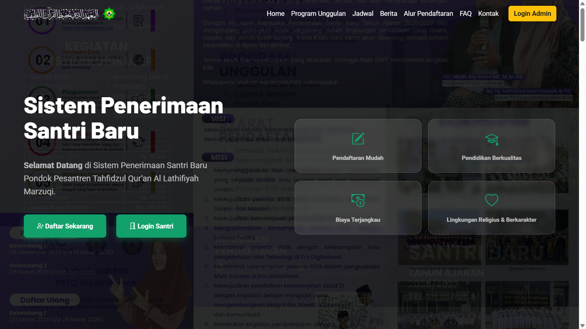
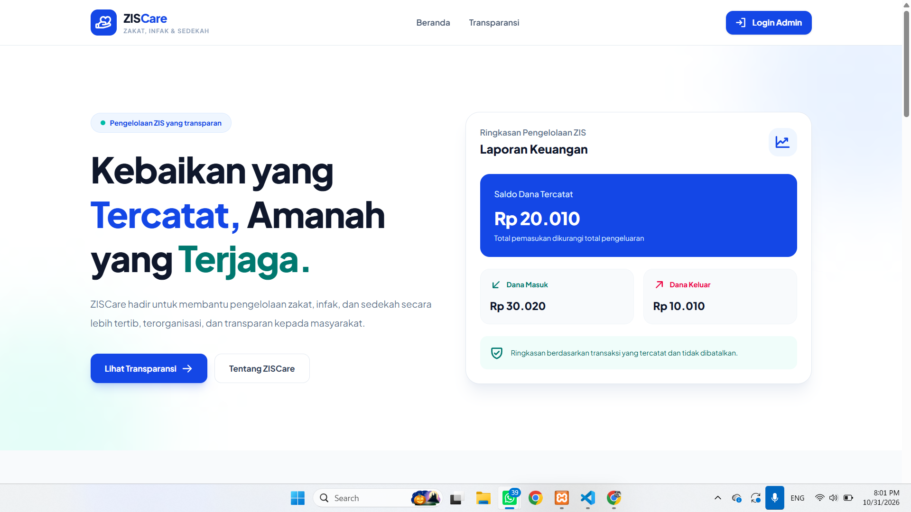

Website Profil Lembaga Pendidikan
Website resmi untuk sekolah, madrasah, pondok pesantren, dan yayasan: profil, program, berita, galeri, dan informasi kontak yang tertata rapi serta nyaman diakses dari ponsel.
SIP Studio membantu sekolah, madrasah, dan pondok pesantren membangun website serta sistem informasi yang profesional, mudah digunakan, dan sesuai kebutuhan lembaga.
Sarana Informatika Pendidikan, atau SIP Studio, adalah layanan pengembangan website, aplikasi, dan sistem informasi yang berfokus pada dunia pendidikan: sekolah, madrasah, pondok pesantren, dan yayasan, serta UMKM sebagai layanan pendukung.
Setiap lembaga memiliki kebutuhan, kemampuan pengelolaan, dan tujuan yang berbeda. Karena itu kami tidak menawarkan satu solusi untuk semua, melainkan merancang solusi yang cocok dengan cara kerja lembaga Anda.
Pilih layanan yang sesuai, lalu diskusikan ruang lingkupnya bersama kami.
Website resmi untuk sekolah, madrasah, pondok pesantren, dan yayasan: profil, program, berita, galeri, dan informasi kontak yang tertata rapi serta nyaman diakses dari ponsel.
Pendaftaran santri atau peserta didik baru secara daring, dari pengisian formulir hingga pengelolaan data pendaftar.
Pengelolaan data akademik dan administrasi pendidikan dalam satu sistem yang terstruktur.
Aplikasi web yang dikembangkan khusus untuk alur kerja dan kebutuhan unik lembaga Anda.
Dukungan teknis dan pengembangan lanjutan agar website dan sistem tetap berjalan baik, sesuai kesepakatan layanan.
Layanan pendukung bagi pelaku UMKM yang ingin hadir secara profesional di dunia digital.
Fitur dan alur disusun berdasarkan kebutuhan lembaga, bukan paket yang dipaksakan.
Dirancang agar nyaman dibuka di ponsel, tablet, maupun komputer.
Susunan sistem dibuat jelas sehingga lebih mudah dipelajari dan dikembangkan.
Pengelola lembaga dapat memperbarui informasi tanpa kerumitan teknis berlebihan.
Konsultasi terbuka agar ruang lingkup dan harapan sejak awal sama-sama dipahami.
Pemeliharaan tersedia sesuai kesepakatan layanan.
Kami mendengarkan kondisi, tujuan, dan kendala lembaga Anda.
Kebutuhan dirumuskan menjadi rancangan solusi dan ruang lingkup kerja.
Tampilan dan sistem dibangun sesuai rancangan yang disepakati.
Fungsi diuji dan hasilnya ditinjau bersama sebelum diluncurkan.
Website atau sistem diluncurkan, disertai penjelasan penggunaan.
Dukungan lanjutan berjalan sesuai kesepakatan layanan.
Kumpulan sistem informasi dan platform digital yang telah dikembangkan untuk membantu efisiensi operasional institusi serta organisasi.

Sistem akademik modern terintegrasi untuk mengelola data guru, santri, kelas, dan administrasi pesantren dengan fitur login aman serta smart dashboard.

Aplikasi penerimaan santri baru secara online yang mencakup formulir registrasi digital, unggah berkas persyaratan, serta panel seleksi administrasi bagi panitia.

Aplikasi pengelolaan zakat, infak, dan sedekah yang dilengkapi formulir digital, sistem unggah berkas, serta panel manajemen data yang efisien.
Diskusikan kebutuhan sekolah, madrasah, atau pondok pesantren Anda bersama SIP Studio untuk menemukan solusi yang tepat.
Hubungi SIP Studio